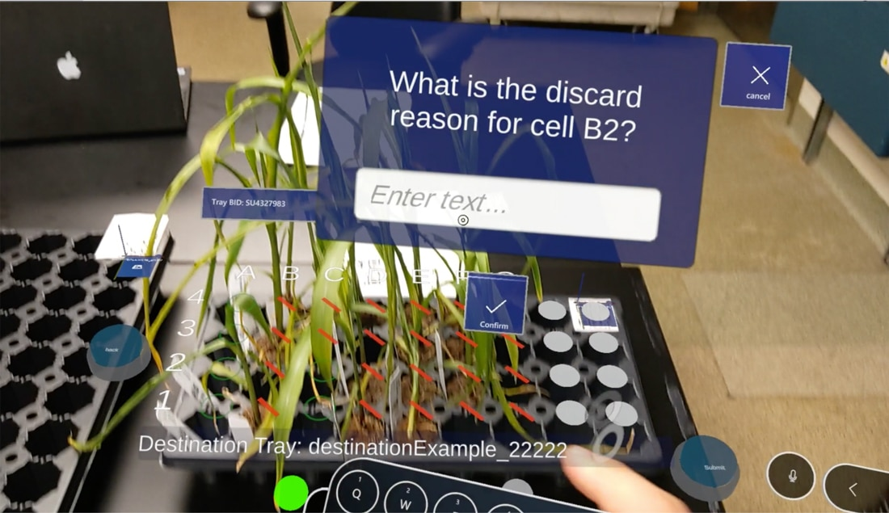

AR Machine Replacement
Sole Developer | Another Reality Studio

A Fortune 100 medical and agricultural company used a large, expensive machine to select plants: staff inspected each plant and marked it as good or bad. The machine was fixed in one room, so products had to be transported to it, and it could only handle one user and one test at a time.
I developed a HoloLens 2 app to replace it. The person selecting plants sees digital information overlaid on the real trays, and virtual tags replace the physical stakes. It can be used from any location, can be updated as the needs change, and runs on multiple headsets so several people can work at once.
I was the sole developer on the project.